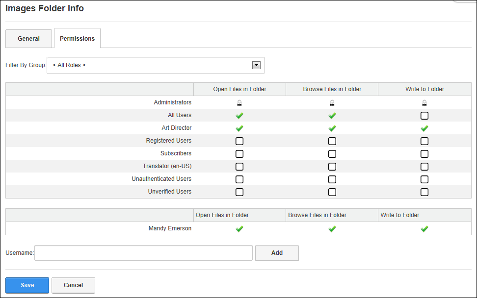

File Management - OR - Go to a Digital Asset Management Pro module.
File Management - OR - Go to a Digital Asset Management Pro module.How to modify the permissions assigned to a folder of the Digital Asset Management Pro module. All users who have been granted Write to Folder permission to a folder can modify the permissions for that folder. All users who have been granted Add permission to a folder can modify the permissions for that folder.
File Management - OR - Go to a Digital Asset Management Pro module.

